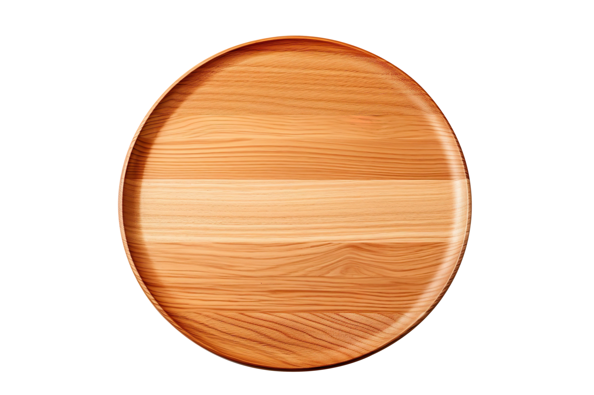

Excitement sound included. Not legally binding, but emotionally supportive.
A spinning little shrine to glorious Filipino food. Click a dish and it pops up with a tiny burst of auditory joy, because apparently we are a very serious software company now.
